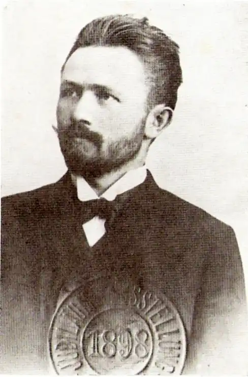

Народився у містечку Рогатині (нинішня Івано-Франківщина) у родині кравця. Після закінчення початкової школи навчався в Бережанській гімназії, де разом із Богданом Лепким заснував літературно-мистецький гурток, девізом якого були слова Й. Ґете "Більше світла!". Бажаючи опанувати слов’янські мови, поет переходить до Віденського університету, де слухає лекції видатного вченого-славіста Ватрослава Ягича.
У Відні Сильвестр Яричевський розгортає активну творчу роботу – пише багато поезій, нарисів, оповідань, а також статей про мистецьке життя столиці. Велике значення для нього мали дружба з Марком Черемшиною, Мелетієм Кічурою, листування з Осипом Маковеєм. Під час навчання брав участь у виданні альманаху "Січ", друкував свої поезії в газеті "Буковина", в журналах "Дзвінок", "Зоря", "Комар", "Науково-літературний вісник" та ін.
Невдовзі Сильвестр Яричевський перебирається до Чернівців, де працює якийсь час у газеті "Буковина", а восени 1904 року влаштовується викладачем у Кіцманській гімназії. Сильвестр Яричевський працював в українській літературі майже чверть століття і залишив після себе низку яскравих художніх творів та світле ім’я культурного діяча-патріота. У 1978 році в Бухаресті вийшов двотомник творів С. Яричевського (упорядкування, вступна стаття і примітки Магдалини Ласло-Куцюк). П’єса письменника "Лови на ловців" у 90-ті роки з успіхом ішла на сцені Чернівецького українського музично-драматичного театру імені О. Кобилянської. Помер письменник 30 березня 1918 року в Сереті, де й похований.